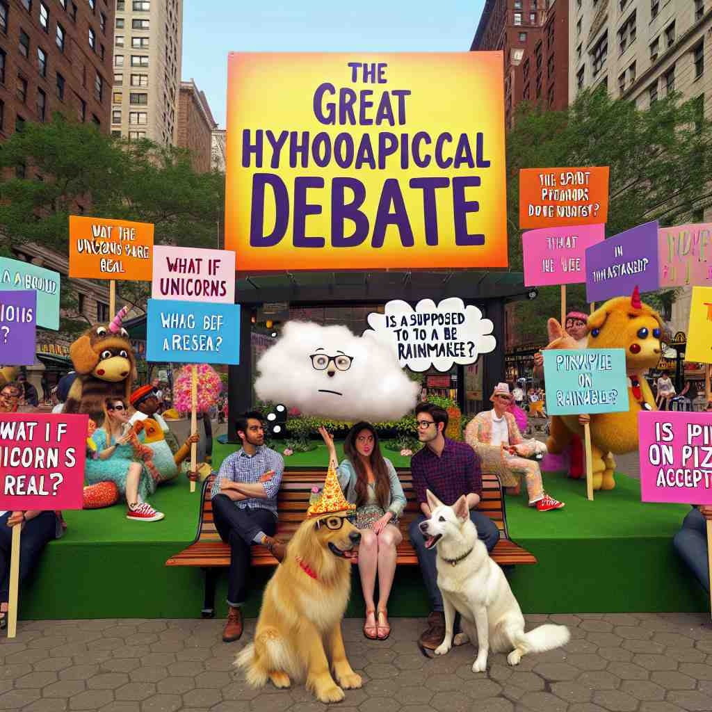
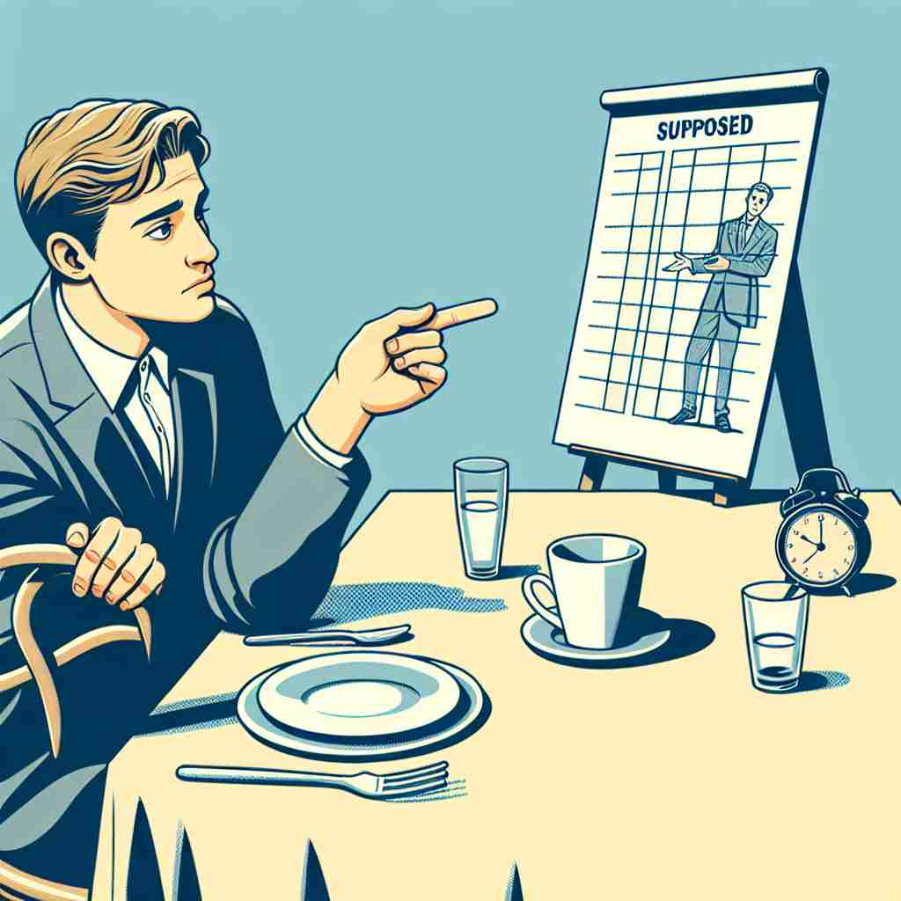

💬 They think it is supposed to be true that everyone is friendly here. 他们认为这里应该是每个人都很友好的。

💬 The characters are supposed to be here for the great debate. 角色们应该在这里参加伟大的辩论。

💬 Many kids think that every person is supposed to be true superheroes. 许多孩子认为每个人都应该是真正的超级英雄。

💬 In a meeting, everyone is supposed to follow the rules. 在会议上，每个人都应该遵守规则。
🧠 想象"supposed"是一个标签，贴在人们认为是真实或正确的事物上。这个核心概念可以帮助你理解它的其他用法：无论是被期望做的事、计划中的事，还是用来质疑某个观点，都源于这个"被认为是真的"的核心含义。记住这个核心意思，你就能更容易理解和运用"supposed"的各种用法。
🔈 [sə'pəʊzd]
🗝️ adj. believed to be true or real, but not certain 被认为是真实的，但不确定。
🎭 在一个温馨的家庭晚餐中，家人们正围坐在餐桌旁谈论着某个传闻。父亲严肃地说道：'这位新来的邻居据说是一位著名的作家，但我不确定是不是这样的。'他的语气中透露出不确定性，将'supposed'的含义生动地展现出来。
💬 The supposed benefits of this diet have not been scientifically proven. 这种饮食的所谓好处尚未得到科学证明。
🌳 由词根 "pose"（放置）加上前缀 "sup-"（变体形式，为 "sub-"，表示在下面）和后缀 "-ed"（过去分词或形容词形式）组成，表示 "被假设的，所谓的"。
🕸️ 1. suppose: 假设 2. proposal: 提议 3. impose: 强加
💡 记忆 "supposed" 可以联想到 "support + pose"，即在某种情况下的假设立场，帮助理解其作为形容词时的含义。